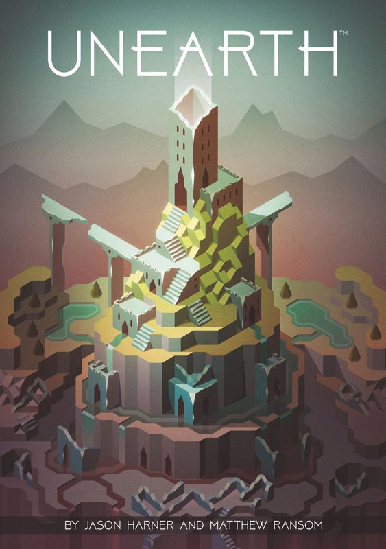
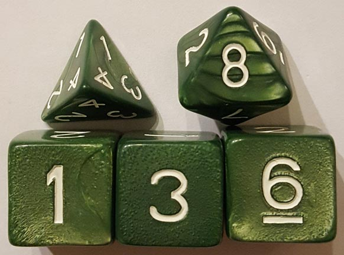
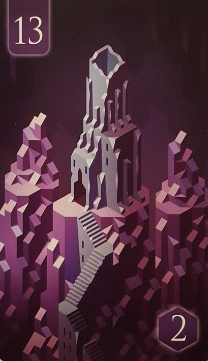
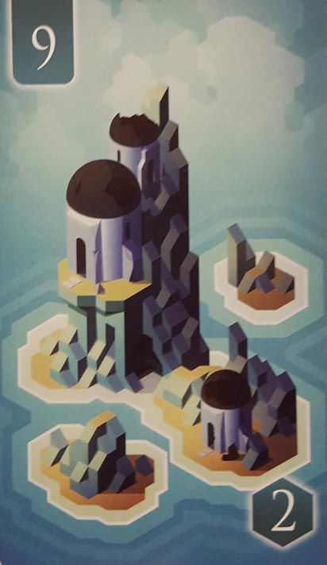
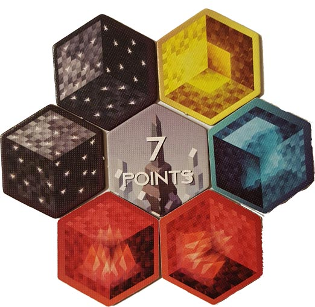
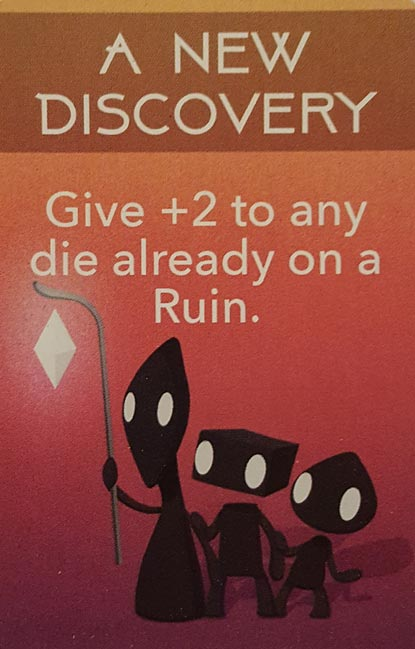
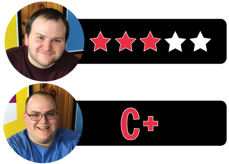

In this Unearth review, we analyze the relatively new, dice-rolling tabletop game from Brotherwise Games. Designed by Jason Harner and Matthew Ransom, Unearth has its players delving into the remains of a lost empire in search of ruins and wonders. In reality, the game has its players rolling dice in order to unlock cards, and sets of these cards are worth victory points at the end of the session. For more, continue reading below.

D reviews Unearth
 (Author’s
note: this review is meant to accompany our gameplay video and will not
go in-depth on the game’s rules. If you’re interested in learning how
the game is played, please watch the video. It’s not bad.)
(Author’s
note: this review is meant to accompany our gameplay video and will not
go in-depth on the game’s rules. If you’re interested in learning how
the game is played, please watch the video. It’s not bad.)
I’m not a professional game designer. I do play a lot of them and have an incomplete idea for a game written out on a document on my computer, but I am far from an expert on the ins and outs of designing and perfecting a board game. I mention all of this because after playing through and reflecting upon my experience with Unearth, I’m left with questions about some of the choices that were made in regards to its rules. I think it has some pretty solid mechanics overall; I’m just not certain that it makes the most of them. But before I get into those questions that I have, let me talk about the parts of Unearth that I definitely like.
For starters, the art – courtesy of Jesse Riggle – is pretty gorgeous. In the video, Will compares it to what you might find in an indie video game, and I definitely agree. I could easily imagine an isometric adventure game where you explore the large, striking ruins found on Unearth’s cards. The art also makes good use of color to differentiate between the various terrains where the ruins are found. The other components, like the dice and tokens, are fine, although it would have been cool if they had included custom dice more in line with the art style, rather than the basic ones you get. Overall though, the production quality is solid for what is a pretty affordable game.
In terms of gameplay, perhaps the best thing I can say about Unearth is that it’s never boring. It certainly moves. Once everyone gets into the flow of things, there’s very little downtime and you’ll probably be surprised by how quickly you reach the end of the Ruins deck. The rapid pace and short play time, however, sort of highlight some of those rules decisions that have me scratching my head. For example, at the start of the game, each player is dealt a Ruins card face-down, and the top five Ruins cards are removed from the game. The face-down card is, in my opinion, a good idea. It creates that little bit of extra drama during the scoring at the end, as that single card may earn its player an additional 6-10 points. The rule to discard five cards, however, strikes me as a misstep. It shortens the game, certainly, but it also introduces an extra, unnecessary element of luck to a game that already requires plenty of luck. Part of it is, I assume, to prevent players from guessing what their opponents’ face-down cards are, as there are only five cards for each of the five colors. But discarding five of them in advance can leave a player unknowingly at a disadvantage if the color of their face-down card is largely removed from play before the game starts. I can’t help but to think that something like discarding only one card per player would be a little better.
Furthermore, part of the reason that Unearth has such little downtime is that the rules don’t really encourage much competition over the ruins, leading players to often focus on separate targets, especially if a player already has a high roll on one. A large reason for this issue is that there are always two more ruins on the board than there are players, at least until the end of the game. There isn’t much reason to fight over a ruin, since there is probably another useful one out there that you can focus on. Only at the end of the game, when the number of ruins on the board starts to diminish, does it become necessary to really use your brain. Coincidentally, this is easily the most interesting part of the game. Limiting the number of ruins on the board would certainly increase the amount of downtime and overall playtime, but I feel like it would more than make up for those concessions with its far greater quantity of strategy and tension.
I will say that I like the scoring system in the game, as well as the way it rewards both low and high rolls. High rolls, of course, are good for collecting the Ruins cards, while low rolls allow players to take Stones that can be used to earn Wonders. Some of these Wonders provide special abilities, but mostly they just offer a small number of points at the end of the game. It’s important to realize that you cannot win by focusing exclusively on the Wonders – collecting sets of Ruins is definitively the way you earn the most points – but they are a necessary inclusion. Low rolls are also a good way to earn Delver cards, which can be very useful. Just watch our video to the end if you don’t believe me. Overall, I think Unearth is a decent game that is maybe one or two tweaks away from being a really good one. I’ll still recommend it to people who love dice games and are looking for one that is cheap, quick, and doesn’t require too much thinking.
D’s Rating: Three Stars out of Five.
Will reviews Unearth
 Despite its inconsistent mechanics and shortage of meaningful theme, Unearth is
a mostly satisfying dice-rolling game. About fifteen minutes into our
first playthrough of it, I knew that it was a game that I’d never hate
playing, but also one that’d never come close to being a favorite of my
(or our) table. So yeah, it’s one of those games – a middling experience
that neither impresses nor disappoints. However, I should clarify that I
enjoy a lot of the middling games that we play. At least they’re not a
waste of time (or money), and there’s usually something redeeming about
them.
Despite its inconsistent mechanics and shortage of meaningful theme, Unearth is
a mostly satisfying dice-rolling game. About fifteen minutes into our
first playthrough of it, I knew that it was a game that I’d never hate
playing, but also one that’d never come close to being a favorite of my
(or our) table. So yeah, it’s one of those games – a middling experience
that neither impresses nor disappoints. However, I should clarify that I
enjoy a lot of the middling games that we play. At least they’re not a
waste of time (or money), and there’s usually something redeeming about
them.
For instance, I found the artwork and components to be plenty redeeming, even if they may not meet the expectations of some gamers. As I mentioned in our gameplay video of Unearth, I found Jesse Riggle’s art to be akin to the kind you’d see in an indie video game, à la Journey. Personally, I find that sort of art style to be visually appealing, even if that somewhat minimalistic style could be seen as lazy or uninspired. Sadly, the artwork is the only thing connecting the gameplay to the theme, and it barely does that. Unearth is supposed to be about excavating ruins for answers and treasures, but if you altered the art at all, you’d never know it. Still, I appreciated that the Ruins, Wonders, and Delver cards all came in varying sizes that aided in differentiating them. The Ruins cards were especially large, which was nice. Build-wise, everything is of a quality that you’d expect from any board game, with the hexagonal Stone tokens being crafted from stiff enough cardboard.
For the most part, I liked Unearth’s gameplay; I didn’t love it though. First and foremost, I appreciate that the game offers multiple paths toward earning victory points. Each turn, you roll dice and place them on a Ruin card of your choosing. A high roll (4,5, or 6) will go a long way in helping you claim the more costly Ruins, whereas a low roll (1,2, or 3) allows you to claim a Stone that can be added to your tableau. If you create a ring of six Stones, you’ll unlock a Wonder that’ll be worth points at the end of the game. What this means is that both high rolls and low rolls have value, instead of just the high rolls or low rolls having value. Balancing dice-rolling can be tricky business, and I think the designers did an admirable job with it in Unearth.
On the other hand, the dice-rolling does come with its fair share of problems. For one, if you roll a 4, it almost always sucks. 4’s don’t earn you a stone, and they also don’t do much in the way of procuring the pricier Ruins. Rolls of 5 aren’t much better, at least with the 8-sided dice. Another issue with the dice is that the expensive Ruins can cost 17+, which means you may need to dedicate four or more dice to unlock them. In a 3-player game, it’s really easy to strand most of your dice on one card and hope for another player to help you out. Unfortunately, there’s almost no reason for your opponents to ever do so. Why?
Well, in a 3-player game, there are always five Ruins available on the board. This means that in most sessions, players will have little to no problem going after the Ruin they want without having to interact with the other players. Sure, you might occasionally snag the Ruin that someone else is targeting, and that’s an awesome experience. But for the most part, you’ll rarely battle over the same card. Unearth often feels too safe, as if the designers were hesitant to encourage heated competition. I really don’t know why – this definitely isn’t a Euro-style tabletop game. No, this is “Ameritrash”, a term that some people hate but that I embrace. And if you’re crafting an Ameritrash game, then make it trashy and contentious and exciting. In my opinion, if you reduce the number of Ruins cards available to the players, then you’ll end up with a fiery, intense experience that’ll move fast and temporarily damage friendships. After all, that’s what board gaming is all about.
Alas, what we’re left with here is a game that’s equal parts intelligent and uninspired. Rarely do I play a game that features so many noticeable missed opportunities, and yet, I still had fun. The designers were definitely onto something with how they balanced the dice-rolling, and offering multiple paths toward earning victory points was smart, even if collecting Stones rarely nets you that many points. Playing Unearth was a definitely a learning experience for me. I learned that balancing dice-rolling is possible in any kind of game, if you put your mind to it. But I also learned that playing it safe might end up spoiling what could go down as a terrific tabletop game.
I give Unearth a: C+
Unearth Review – Board Crazy’s Ratings

Leave a Reply
You must be logged in to post a comment.